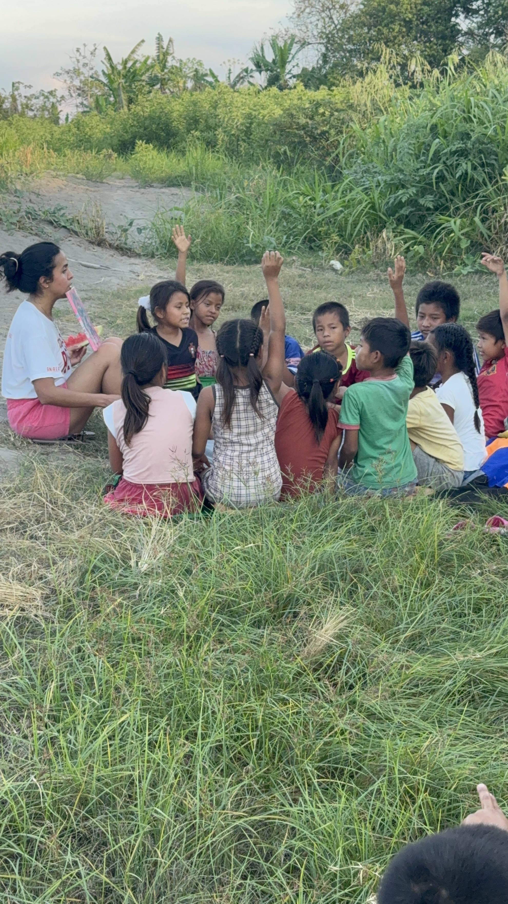
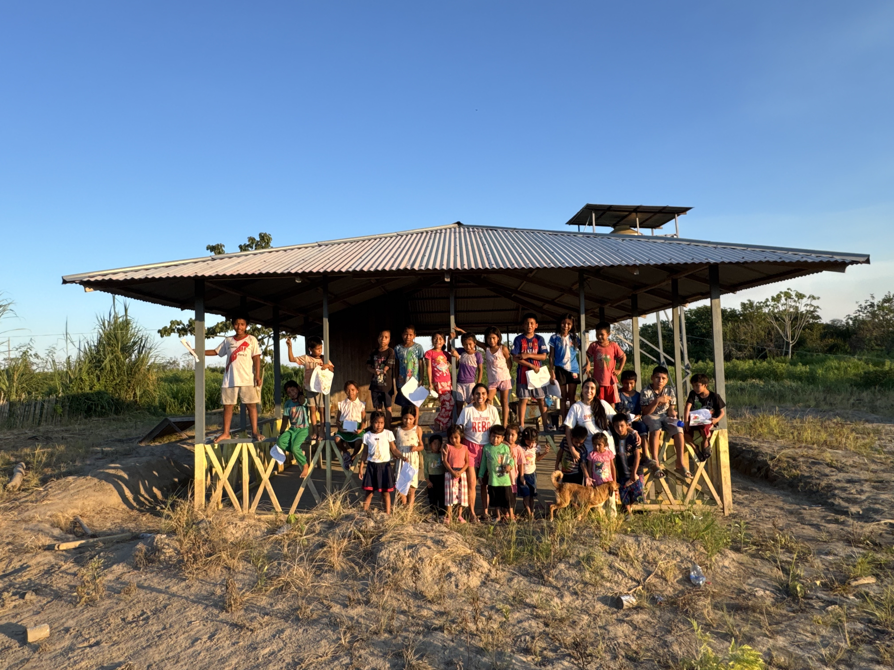
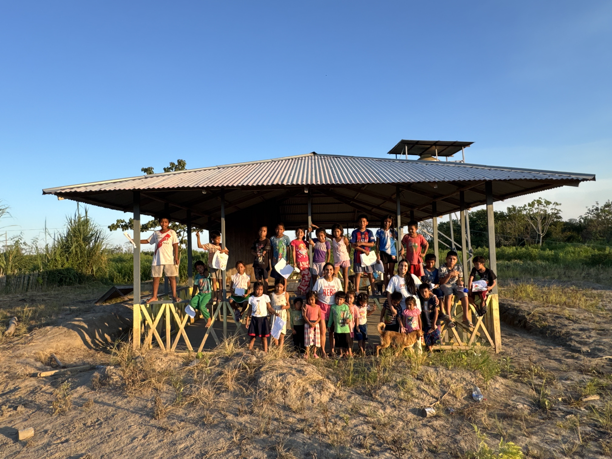
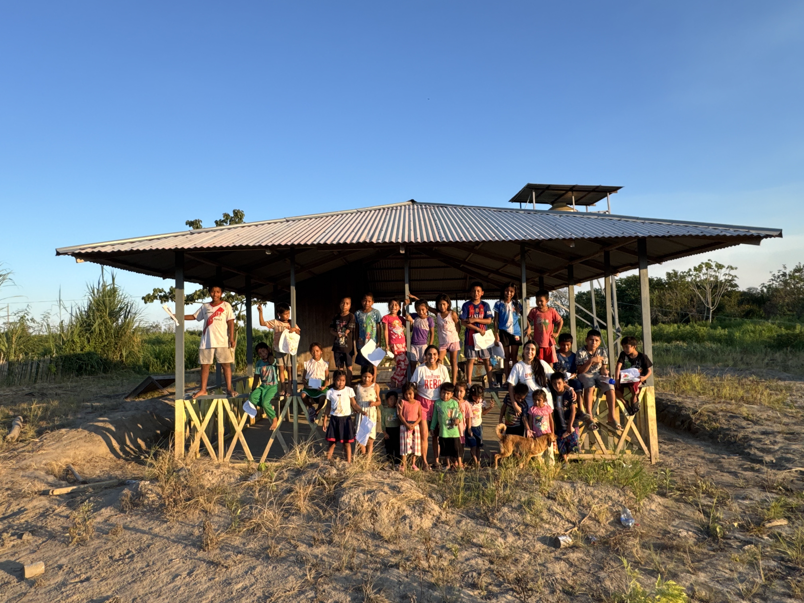
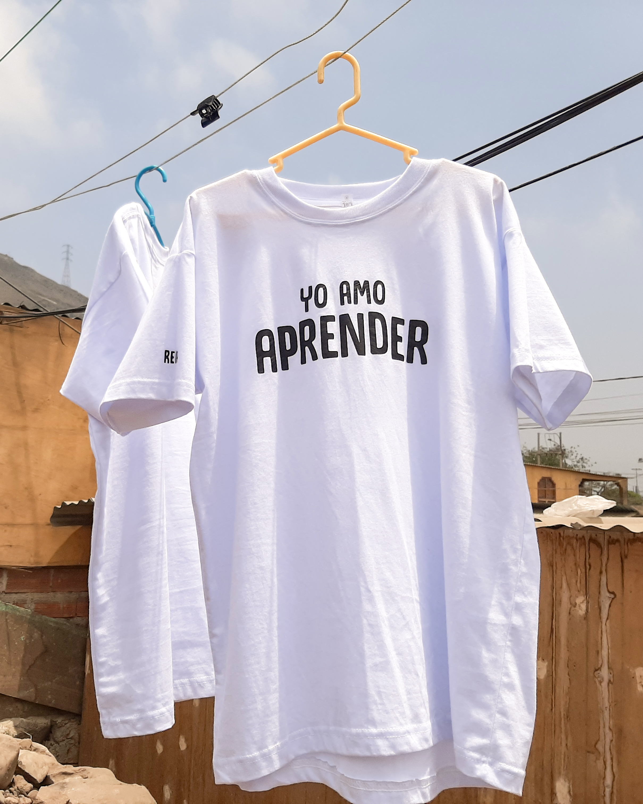
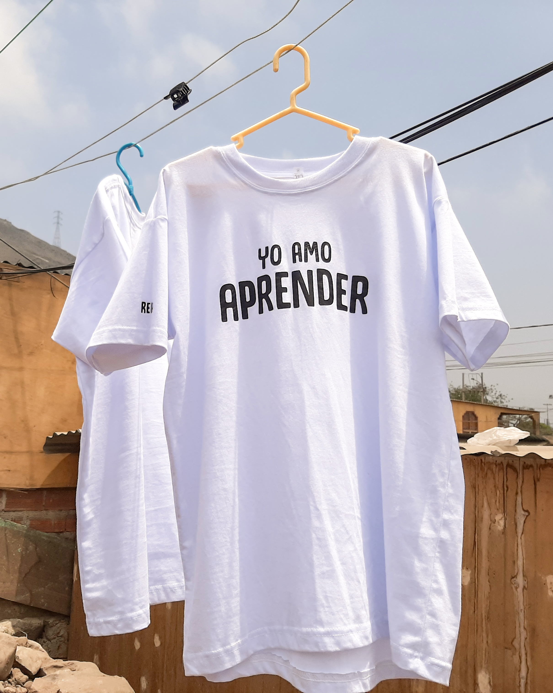

Leer para crear (2012 - 2025)
A través de este programa fomentamos el acceso al ejercicio del derecho a la lectura en zonas rurales como: Huacho (Oyón, Lima); “Las Brisas de Abancay” (Ucayali); distrito de Obrajillo (Canta, Lima); y San Pedro de Casta (Huarochirí, Lima). En los años que venimos desarrollando este programa hemos compartido con más de 500 niñas, niños y adolescentes.

 


 
